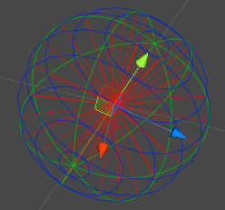

Grid Framework version 1.9.0 released
Category: release
Version 1.9.0 of Grid Framework has been approved by the Asset Store team. This release marks the addition of the fourth kind of grid to the framework: spherical grids.

The full changelog:
- New: A new grid type, spherical grids.
- Manual: Chapter with frequently used code snippets.
This may not look like much, but spherical grids have been on the to-do list since day one, so this is a major step. The other change is a new manual chapter that contains useful snippets based on frequent questions people have asked over the years. I hope you find it useful.
I'm not quite sure what to do next. I have been having second thoughts about pathfinding because there are many ways to implement it and all have their strengths and weaknesses, there is no ideal solution. It might be better to provide an easy interface for an existing pathfinding solution instead. If you are using the popular A* plugin for Unity there will be something about it in the next article.
There is also triangular grids, which are just a triangular tiling of hex grids, so if I can't think of anything else I'll go for that instead. If you have a better idea just drop me a line.